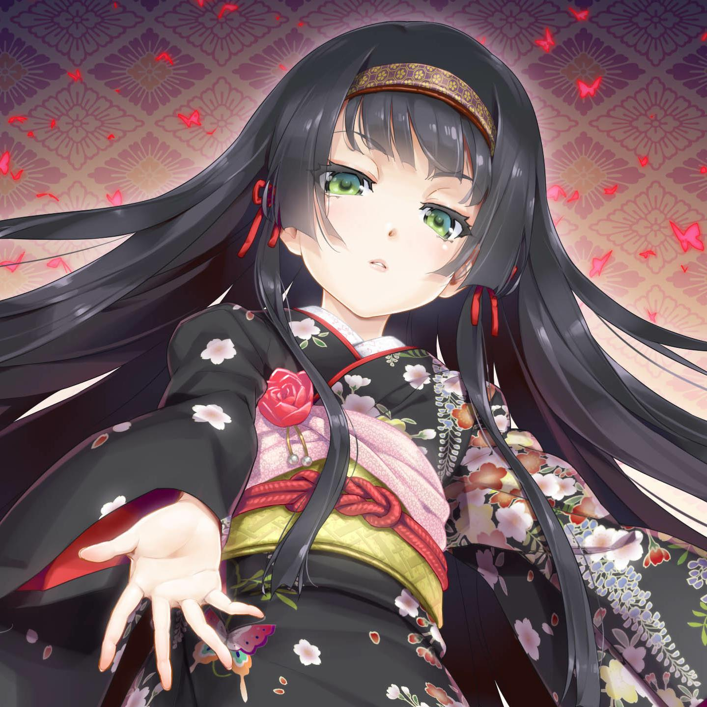
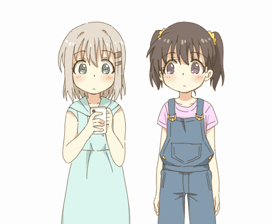

About Skill
2017,第一次接触到了C语言, 在拥挤的实验室，完成了第一个hello world!程序
2018,年初的时候接触到了C++，尝试做一个GUI程序, 接触到了QT5。
剩下的月份学习了JavaWeb技术，Spring+SpringMVC+Mybatis后端框架
接着学习了Bootstrap、Jquery前端框架, Scrapy爬虫技术
2019,接触到SpringBoot, 尝试建一个前后二次元分享社区-mikomiko
使用Scrapy，爬取了BiliBili、樱花动漫、琉璃神社等动漫、galgame资源
2020,体验了一款ARPG手游站双帕弥什，萌生出开发一款游戏的想法
喜欢UI,交互设计
未来...想成为一名全栈工程师

-
2017.9-Now
西北民族大学
专业：软件工程
最喜欢的科目是高等数学
现在正在愁于毕业设计
-
2019.12-2020.5
家里蹲
游戏体验员(笑)
没学到什么东西
前途多艰
-
2020.10-2020.12
参加CCSP算法竞赛
获得西北赛区银奖和全国铜奖
受益匪浅
-
Future
...
Something Of Hobby
-
ACG
动漫&视频
ACG/动漫&视频
动漫入宅作《某科学的电磁炮》 喜欢治愈番《星之梦》《天使的心跳》... 喜欢异世界番《游戏人生》、《问题儿童都来自异世界?!》... 喜欢的声优是茅野爱衣、钉宫理惠、花泽香菜。是个典型的白毛控重度患者。
-

ACG
游戏&Gal
ACG/游戏&Gal
Galgame入宅作《美少女万华镜 -被诅咒之传说之少女-》...我永远喜欢篝之雾枝.jpg
ACG对我而言是和文学一样的文化,最具感染力的抒情方式,将来希望自己工作在二次元的领域。 -

文学
历史&写作
文学/历史&写作
和大多数人一样曾经也捧着一本小说看,以前喜欢马尔克斯村上春树,现在的兴趣 转移到轻小说上去了。ps:《创约 魔法禁书目录1》教主初吻没了，我的青春结束了！
此外也会写点东西,就是毅力不够，仍需磨砺。